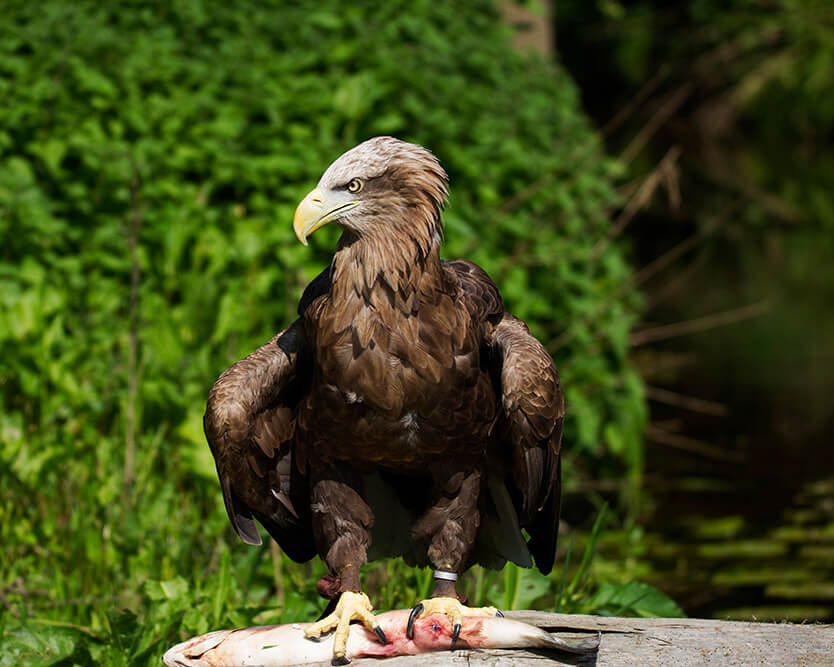

Kaya kartalı (Aquila chrysaetos), dünyanın en görkemli yırtıcı kuşlarından biri olarak bilinir ve özellikle dağlık bölgelerin sembolü haline gelmiştir. 2 metreden fazla kanat açıklığına sahip olan bu kuş, keskin görüşü ve güçlü pençeleriyle avını havada süzülerek takip eder, ani dalışlarla etkileyici bir şekilde yakalar. Avrupa, Asya ve Kuzey Amerika’nın yüksek dağlarında yaşayan kaya kartalı, uzun ömürlüdür ve tek eşli bir yaşam sürerek yuvalarını genellikle sarp kayalıklara kurar. Ekosistemde avcı rolüyle dengeyi koruyan bu tür, aynı zamanda güç, özgürlük ve asaletin sembolü olarak birçok kültürde yer bulmuştur. Tarih boyunca bayraklarda, armalarda ve mitolojik anlatılarda kendine yer edinen kaya kartalı, hem biyolojik çeşitlilik açısından hem de kültürel sembolizm bakımından insanlık için özel bir anlam taşır.